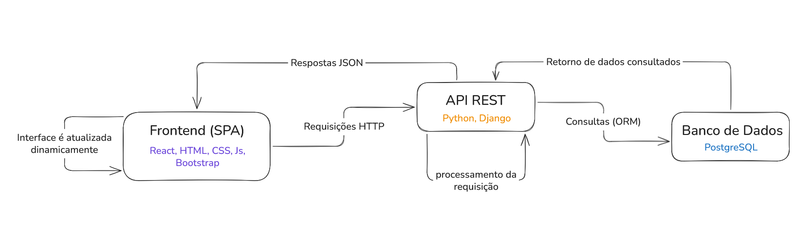
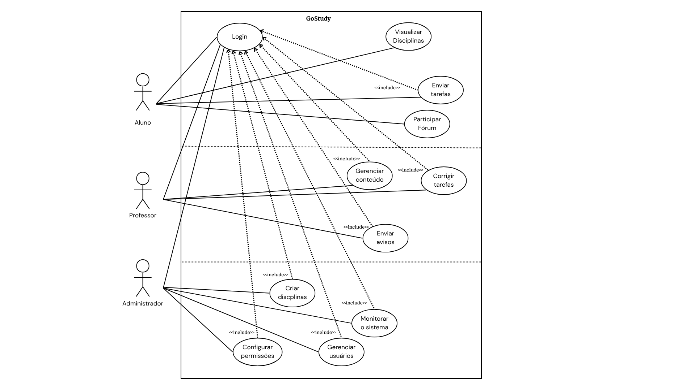
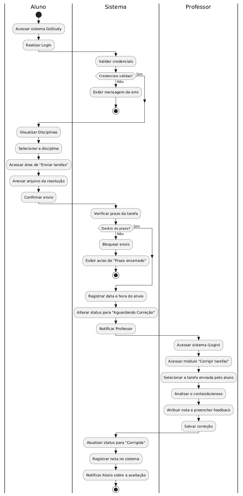
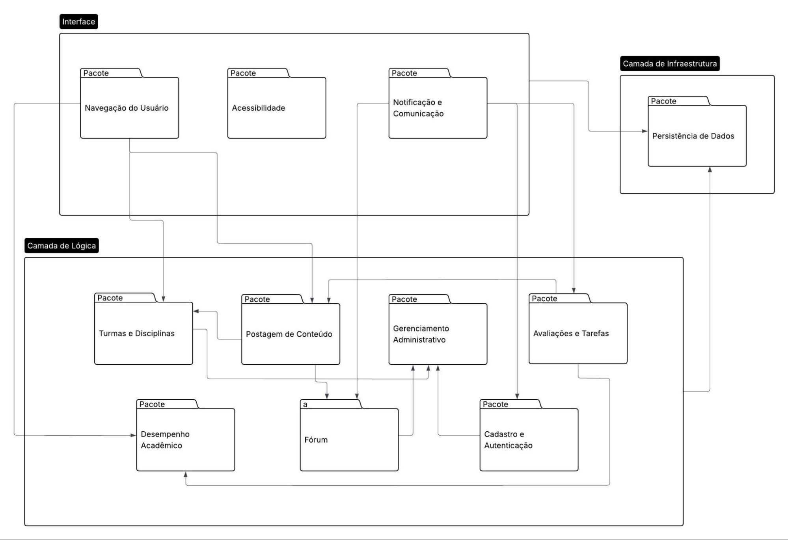
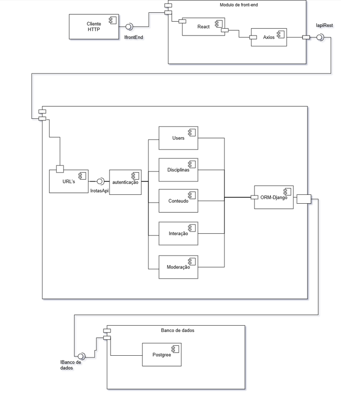
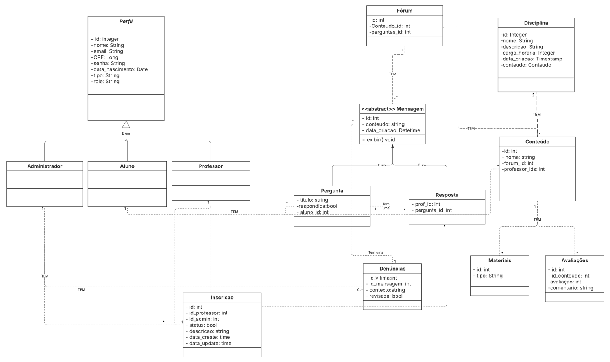
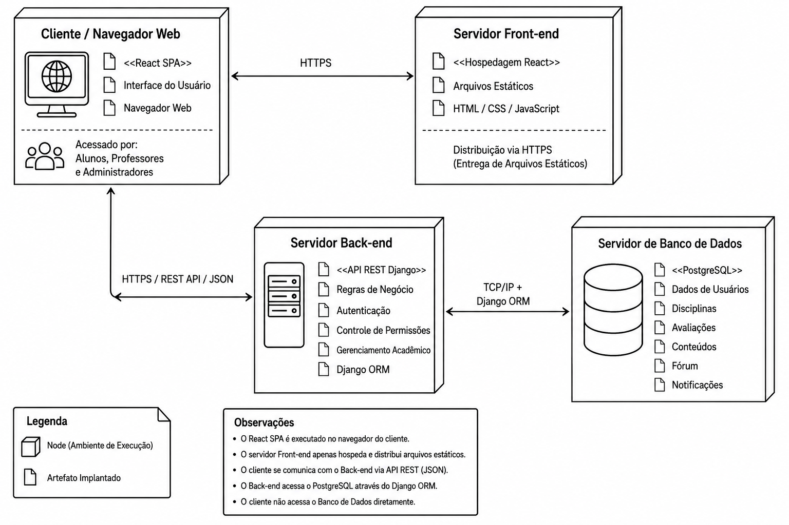

GoStudy
Documento de Arquitetura
Versão 1.2
Tabela - Integrantes do Grupo
| Matrícula | Nome | Função (responsabilidade) | Pontos de participação na elaboração |
|---|---|---|---|
| 242004706 | Gabriel Vieira Octacilio Pinheiro | P.O | 9.1 |
| 242015989 | Zayra Batista Moraes | Analista de qualidade | 9.1 |
| 242005196 | Arthur Evangelista da Silva | Dev | 9.1 |
| 242004840 | Luana Carvalho de Almeida | Dev | 9.1 |
| 232014370 | Arthur Alves Ribeiro | Analista de qualidade | 9.1 |
| 242015960 | Thiago Henrique Machado de Souza | Dev | 9.1 |
| 241012267 | João Vitor Justo Gonçalves | Dev | 9.1 |
| 242015254 | Luisa de Souza Renhe | Dev | 9.1 |
| 242015915 | Luiz Gustavo da Conceição Souza | Dev | 9.1 |
| 242015791 | Clarice Gitirana Gusson | Dev | 9.1 |
| 242015924 | Maria Eduarda de Jezus Guimarães | P.O | 9.1 |
Histórico de Revisões
| Data | Versão | Descrição | Autor(es) |
|---|---|---|---|
| 14/05 | 1.0 | Primeira versão do documento | Grupo Turing |
| 22/05 | 1.1 | Alinhamento das restrições arquiteturais de testes com a inclusão do framework Pytest | Maria Eduarda Guimarães |
| 06/06 | 1.2 | Remoção completa dos módulos de Avaliações e Desempenho Acadêmico e consolidação da terminologia exclusiva de 'Disciplinas' (remoção de 'Turmas'). | Maria Eduarda Guimarães |
Sumário
- 1 Introdução
- 1.1 Propósito
- 1.2 Escopo
- 2 Representação Arquitetural
- 2.1 Definições
- 2.2 Justificativa.
- 2.3 Detalhamento
- 2.4 Metas e restrições arquiteturais
- 2.5 Visões
- 2.5.1 Visão de uso
- 2.5.2 Visão de organização lógica
- 2.5.3 Visão estrutural
- 2.5.4 Visão de Implantação
- 2.6 Restrições adicionais
- 3 Bibliografia
1 Introdução
1.1 Propósito
Este documento descreve a arquitetura do sistema sendo desenvolvido pelo grupo, na disciplina de MDS-Métodos de Desenvolvimento de Software - edição do primeiro semestre de 2026, para o sistema GoStudy, a fim de fornecer uma visão abrangente do sistema para desenvolvedores, testadores e demais interessados em aspectos relacionados às tecnologias a serem usadas no desenvolvimento.
O propósito deste documento é detalhar as diretrizes arquitetônicas, estruturais e de implantação da plataforma web, esclarecendo como ocorrerá a integração entre os módulos do sistema. Ele servirá como um guia técnico para garantir a escalabilidade, manutenção e comunicação adequada entre o back-end desenvolvido em Django e o front-end em React, utilizando a arquitetura de API REST.
1.2 Escopo
O sistema GoStudy é uma plataforma web educacional desenvolvida com o objetivo de apoiar o processo de ensino e aprendizagem por meio de uma aplicação digital estruturada em arquitetura SPA (Single Page Application) integrada a uma API REST.
De forma geral, o escopo do produto contempla:
- Gestão de usuários, com cadastro, autenticação e controle de perfis (Aluno, Professor e Administrador);
- Gerenciamento de disciplinas, permitindo organização do ambiente acadêmico;
- Publicação e acesso a conteúdos educacionais, realizados por professores e disponibilizados aos alunos;
- Sistema de fórum e comunicação, promovendo interação entre usuários;
- Módulo de notificações, para informar sobre atividades, atualizações e eventos relevantes;
- Recursos de acessibilidade, garantindo inclusão e adaptação da interface para diferentes perfis de usuários.
O sistema será desenvolvido como uma aplicação web responsiva, utilizando React no frontend, Django no backend e PostgreSQL para persistência de dados, seguindo o padrão de comunicação via API REST.
Não fazem parte do escopo desta versão inicial funcionalidades que não estejam diretamente relacionadas à operação acadêmica da plataforma, bem como integrações externas complexas não previstas nos documentos de Visão e Declaração de Escopo já entregues.
Em síntese, o escopo do GoStudy compreende o desenvolvimento de uma plataforma educacional modular, segura e escalável, destinada a organizar conteúdos, atividades, comunicação dentro de um ambiente web estruturado.
2 Representação Arquitetural
2.1 Definições
O sistema segue uma arquitetura modular em camadas baseada no modelo cliente-servidor, integrada a uma API REST para fazer a comunicação entre o frontend e o backend. Junto a isso, será utilizado o modelo Single Page Application (SPA), permitindo uma navegação dinâmica pelo usuário, sem recarregar a página inteira a cada interação.
A arquitetura separa de forma clara as responsabilidades entre o frontend, o backend e o banco de dados, o que favorece a organização do código e a evolução do sistema.
O frontend será construído com React, HTML, CSS e Bootstrap; o backend com Python e Django; e a persistência de dados será feita com PostgreSQL. Essas tecnologias serão beneficiadas pela escolha arquitetural, onde a comunicação entre o frontend e o backend ocorrerá por meio de requisições HTTP usando REST, enquanto que o backend acessará o banco de dados por meio do Django ORM. Por fim, o versionamento do código será feito pelo Git e Github, tudo sempre com o apoio colaborativo de toda a equipe.
2.2 Justificativa
A escolha da arquitetura em SPA API-REST vem da necessidade de que a plataforma seja modular, escalável, acessível e de fácil manutenção, respeitando o trabalho de diversos desenvolvedores ao mesmo tempo e reduzindo conflitos durante esse desenvolvimento colaborativo (conforme definido na seção 1.3 do documento de visão do produto).
O uso do React no Frontend gera uma interface dinâmica e responsiva, fácil de interagir, além da criação de módulos de acessibilidade.
O Backend em Django colabora com a lógica de funcionamento e interação com banco de dados, na autenticação, controles de permissão e regras de funcionamento interno.
O Banco de Dados em PostgreSQL garante a integridade dos dados com tolerância a falhas e persistência deles em todas as interações. Em escalabilidade, permite que vários usuários modifiquem os dados simultaneamente sem bloquear o banco de dados.
As plataformas Git e Github ajudam na organização e gerenciamento das branches e issues definidas para as respectivas funcionalidades completas, facilitando o desenvolvimento.
Cada parte tem suas responsabilidades definidas e bem estruturadas, e a escolha de comunicação (REST API) entre essas partes facilita a modularidade, assim como no momento de testes iterativos e desenvolvimento paralelo, todas características inatas do desenvolvimento ágil e XP definidos anteriormente pelo ciclo de vida (seção 2.1) no documento de visão.
O SPA cria uma melhor experiência de usuário, uma vez que essa permanece mais fluída durante a sua navegação na web.
2.3 Detalhamento
A organização arquitetural do sistema foi definida a partir dos perfis de usuários, dos cenários funcionais e seus respectivos requisitos (todas definidas nas seções 4.2 a 4.4 do documento de visão). Com base nessas definições, serão utilizadas três camadas principais para o desenvolvimento, com responsabilidades próprias, componentes e regras de uso:
Camada frontend:
Responsabilidades: renderizar interface, navegação, formulários, configurações de acessibilidade, responsividade, comunicação de toda a aplicação com a API.
Camada backend:
Responsabilidades: verificação de autenticação, autorização, regras de negócio, endpoints de API, validação de envio de dados, gerenciamento de sessão, lógica geral de integração.
Camada de banco de dados:
Responsabilidades: armazenamento de dados e persistência, integridade relacional desses dados, performance, registro de usuário, conteúdo educacional, mensagens.
A comunicação entre essas camadas acontece de forma desacoplada e padronizada, onde temos interfaces de interação.
frontend - backend: o frontend consome os endpoints disponibilizados pela API REST via requisições HTTP e respostas json.
backend - banco: o backend valida essas entradas recebidas pelo front, realiza os procedimentos lógicos necessários e acessa os dados através do django orm. O banco de dados não é acessado diretamente pelo frontend. (isso dá segurança, controle e garantia de que os dados se mantêm íntegros).
A imagem a seguir representa essa organização arquitetural e as interações descritas para sua comunicação padronizada.
Figura 01: esquema das camadas e interações

2.4 Metas e restrições arquiteturais
O sistema adotará uma arquitetura baseada em SPA (Single Page Application) + API REST, separando frontend do backend em aplicações independentes. Essa abordagem foi escolhida por proporcionar maior modularidade, facilidade de manutenção, escalabilidade e melhor experiência para o usuário.
Metas arquiteturais
- Desempenho:
- O sistema deve responder a 95% das requisições em até 2 segundos;
- A SPA deve carregar inicialmente em tempo reduzido, priorizando carregamento assíncrono de componentes;
- A comunicação entre frontend e backend deve minimizar transferências desnecessárias de dados;
-
Justificativa: A garantia de fluidez na navegação da aplicação e a melhor experiência para o usuário;
-
Escalabilidade:
- O frontend SPA e a API REST devem ser escalados independentemente;
- A arquitetura deve permitir adição de novos módulos sem impactar significativamente os componentes existentes;
-
Justificativa: Facilita crescimento futuro do sistema e distribuição de carga;
-
Manutenibilidade:
- O frontend e backend devem possuir responsabilidades bem definidas;
- A arquitetura deve permitir adição de novos módulos sem impactar significativamente os componentes existentes;
-
Justificativa: Facilita o crescimento futuro do sistema e distribuição de carga;
-
Usabilidade:
- A navegação entre páginas da SPA deve ocorrer sem recarregamento completo da aplicação;
- O sistema deve apresentar interface responsiva e intuitiva;
-
Justificativa: Melhorar experiência do usuário e reduz tempo de interação;
-
Segurança:
- A API REST deve possuir autenticação e autorização;
- Dados sensíveis devem ser protegidos durante transmissão;
- O sistema deve validar entradas tanto no frontend quanto no backend;
- Justificativa: Reduz riscos de acesso indevido e vulnerabilidades;
Restrições arquiteturais
- SPA + API REST:
- O sistema deverá usar uma arquitetura baseada em API REST para comunicação entre backend e frontend, assim toda troca de informações deve ser padronizada através de endpoints HTTP;
-
O frontend não poderá acessar diretamente o banco de dados, dependendo exclusivamente da API.
-
Frontend:
- O frontend utilizará o React, então toda a interface da plataforma deverá utilizar componentes construídos com essa tecnologia;
-
A interface deverá ser compatível com diferentes resoluções e dispositivos, além de ser compatível com versões mais recentes dos principais navegadores.
-
Backend:
- O backend deverá ser desenvolvido utilizando Python com o framework Django. Toda a lógica do negócio, autenticação, gerenciamento de usuários e integração de dados será baseado nessas tecnologias;
- Separação clara entre regras de negócio e acesso a dados;
-
Os serviços principais da plataforma deverão permanecer disponíveis continuamente.
-
Padrão API:
- A API deve seguir o padrão RESTful;
- Endpoints devem utilizar substantivos no plural:
GET /usuarios/{id},POST /usuarios
- As respostas devem utilizar JSON;
-
Códigos HTTP apropriados devem ser utilizados;
-
BD:
- O sistema deverá utilizar o Postgres para persistência dos dados; todos os dados acadêmicos, autenticações e conteúdos públicos serão persistidos nele;
-
Alterações estruturais devem ser feitas por migrations;
-
Padrão de codificação:
-
O código-fonte deverá seguir um padrão único de organização e nomenclatura:
- Nome de classe:
PascalCase - Nome de atributo/métodos:
snake_case
- Nome de classe:
-
Controle de versão:
-
O desenvolvimento e controle de versão deve ser restringido ao Github, organizado em branches e integrado com Pull Requests revisados, sendo integrado na branch principal apenas após validação.
-
Testes:
- O backend deve possuir testes unitários para regras de negócio utilizando o framework Pytest;
- O frontend deve possuir testes de componentes críticos utilizando bibliotecas nativas do React;
-
Novas funcionalidades somente serão integradas após validação por meio de testes unitários.
-
Segurança:
- Senhas deverão ser obrigatoriamente armazenadas utilizando criptografia/hash seguro, assim garantindo que as credenciais permaneçam seguras.
2.5 Visões
As visões de arquitetura representam diferentes perspectivas utilizadas para descrever e compreender um sistema de software de forma organizada e completa. A visão de uso define o escopo do sistema e demonstra como os usuários interagem com suas funcionalidades. A visão organizacional lógica apresenta a divisão da arquitetura em camadas, módulos ou responsabilidades, evidenciando a separação entre componentes como interface, regras de negócio e persistência de dados. A visão estrutural descreve a composição interna do sistema e os relacionamentos entre suas partes, permitindo entender como os componentes se conectam e colaboram entre si. Por fim, a visão de implantação mostra o ambiente onde o sistema será executado, incluindo servidores, bancos de dados, serviços e infraestrutura necessários para o funcionamento da aplicação. Para melhor entendimento do nosso trabalho especificamos cada uma das visões nas sessões abaixo.
2.5.1 Visão de uso
O escopo do GoStudy consiste em uma plataforma web integrada de estudos voltada para estudantes do ensino médio.
Seu objetivo central é organizar a rotina acadêmica através de trilhas de aprendizagem estruturadas, ferramentas de gestão de tempo e um ambiente de interação colaborativa.
O sistema gerencia três perfis distintos:
- Alunos: Acessam conteúdos, participam de fóruns.
- Professores: Realizam a postagem de materiais didáticos (que podem conter links externos para formulários e exercícios) e respondem a dúvidas.
- Administradores: Gerenciam perfis, homologam currículos de professores, administram denúncias e mantêm as disciplinas.
A plataforma foca na acessibilidade e na centralização de recursos pedagógicos para reduzir a desorganização do aprendizado individual.
Figura 02: Diagrama de Casos de Uso.

Figura 03: Diagrama de Atividades.

Optamos por uma arquitetura em Django, pois ela atende de forma eficiente aos requisitos de processamento e estruturação do sistema. Além disso, a adoção do Python se alinha aos conhecimentos técnicos da equipe, o que garante uma sintaxe limpa, minimiza os riscos de implementação e agiliza o desenvolvimento do projeto.
2.5.2 Visão de organização lógica
O sistema é subdividido nos seguintes módulos:
- Cadastro e Autenticação;
- Gerenciamento Administrativo;
- Navegação do usuário;
- Disciplinas;
- Postagem de conteúdo;
- Notificação e comunicação;
- Fórum;
- Acessibilidade;
- Persistência de Dados.
- Cadastro e Autenticação:
Este módulo é responsável pelo gerenciamento de acesso ao sistema, permitindo o cadastro e autenticação dos usuários (Aluno, Professor e Administrador). É necessário para garantir segurança, controle de permissões e identificação correta dos perfis.
Além disso, ele implementa regras de criptografia de senha, autenticação de login e persistência segura de dados dos usuários.
Este módulo se comunica com: - Banco de Dados → armazenamento dos dados dos usuários; - Módulo Administrativo → validação de professores; - Módulo de Disciplinas → controle de permissões; - Módulo de Fórum → identificação do autor das mensagens.
Interfaces: - Tela de Login; - Tela de Cadastro de Aluno; - Tela de Cadastro de Professor; - API REST de autenticação; - Middleware de autenticação JWT/Session.
- Gerenciamento administrativo:
O módulo administrativo centraliza o gerenciamento global do sistema. Ele é responsável pela manutenção de usuários, análise de denúncias, homologação de professores e gerenciamento das disciplinas. Existindo para garantir uma boa organização e assistência para a plataforma.
Comunica-se com: - Módulo de Cadastro → gerenciamento de contas; - Módulo de Fórum → recebimento de denúncias; - Módulo de Disciplinas → criação e remoção de disciplinas; - Banco de Dados → persistência das alterações.
Interfaces: - Painel administrativo; - Tela de gerenciamento de usuários; - Tela de denúncias; - API administrativa.
- Navegação do usuário:
Este módulo organiza a experiência do aluno dentro da plataforma, permitindo navegação entre disciplinas, conteúdos e atividades. Sua lógica é proporcionar acessibilidade, organização e facilidade de uso.
Comunica-se com: - Módulo de Disciplinas e conteúdos; - Banco de Dados.
Interfaces: - Dashboard do aluno; - Página de disciplinas e conteúdos;
- Disciplinas:
Responsável pela criação, organização e gerenciamento das disciplinas disponíveis no sistema. Sua lógica é estruturar o ambiente educacional da plataforma, permitindo a separação dos conteúdos por áreas de ensino e organização acadêmica.
Comunica-se com: - Módulo Administrativo → manutenção das disciplinas; - Módulo de Conteúdo → associação de materiais; - Módulo de Navegação → exibição das disciplinas aos alunos; - Banco de Dados → armazenamento das disciplinas.
Interfaces: - Tela de gerenciamento de disciplinas; - Tela de inscrição em disciplinas; - API de disciplinas.
- Postagem de Conteúdo:
Permite que professores publiquem materiais didáticos, links de exercícios e conteúdos de apoio. A lógica deste módulo é centralizar o compartilhamento de conhecimento e garantir organização pedagógica dentro das respectivas disciplinas.
Comunica-se com: - Módulo de Disciplinas → vinculação do conteúdo; - Módulo de Fórum → criação automática de fóruns por postagem; - Banco de Dados → armazenamento dos conteúdos.
Interfaces: - Tela de postagem; - Editor de conteúdo; - API de upload/publicação.
- Notificação e comunicação:
Responsável pelo envio de e-mails e notificações automáticas do sistema. Sua função lógica é manter usuários informados sobre a postagem de aulas e materiais, incluindo atividades por meio de links.
Comunica-se com: - Fórum; - Cadastro; - Banco de Dados.
Interfaces: - Serviço de e-mail; - APIs SMTP; - Sistema interno de notificações.
- Fórum:
Permite comunicação entre alunos e professores através de perguntas, respostas e denúncias. Sua função lógica é incentivar interação colaborativa e suporte pedagógico contínuo.
Comunica-se com: - Módulo de Conteúdo; - Módulo Administrativo; - Módulo de Notificações; - Banco de Dados.
Interfaces: - Fórum de dúvidas; - Sistema de respostas; - Tela de denúncias.
- Acessibilidade:
Implementa recursos de inclusão digital, como alteração de fontes, contraste e modos adaptados para daltonismo e autismo. Sua lógica é garantir acessibilidade e inclusão para diferentes perfis de usuários.
Comunica-se com: - Interface do Front-end; - Configurações do usuário; - Banco de Dados.
Interfaces: - Painel de acessibilidade; - Configurações visuais do sistema.
- Persistência de Dados:
Responsável pela manipulação, armazenamento e recuperação das informações da plataforma. Sua lógica é garantir integridade, persistência e segurança dos dados.
Comunica-se com todos os módulos através da API REST e ORM do Django.
Interfaces: - PostgreSQL; - ORM Django; - Serviços de persistência.
Figura 04: Diagrama de Pacotes.**

2.5.3 Visão estrutural
A plataforma GoStudy será organizada utilizando arquitetura cliente-servidor baseada em API REST. O sistema será dividido em 3 camadas principais:
- Frontend
- Backend
- Banco de dados
Figura 05: Diagrama de componentes.

Figura 06: Diagrama de Classes.

2.5.4 Visão de Implantação
A visão de implantação descreve o ambiente em que o sistema GoStudy será executado, apresentando como os componentes da aplicação serão distribuídos na infraestrutura computacional e como ocorrerá a comunicação entre eles. Essa visão permite compreender a organização dos serviços, os protocolos utilizados e as tecnologias responsáveis pela execução da plataforma.
O sistema será implantado utilizando uma infraestrutura baseada em computação em nuvem (Cloud Computing), adotando serviços do tipo PaaS (Platform as a Service) e/ou IaaS (Infrastructure as a Service). A escolha desse modelo se justifica pela necessidade de garantir disponibilidade contínua da plataforma, facilidade de manutenção e possibilidade de escalabilidade conforme o aumento da quantidade de usuários simultâneos acessando o sistema.
A arquitetura de implantação seguirá o modelo SPA + API REST definido anteriormente, mantendo a separação entre frontend, backend e persistência de dados. Essa divisão reduz o acoplamento entre os componentes e facilita o desenvolvimento paralelo, manutenção e evolução futura do sistema.
O ambiente será composto por quatro principais nós de implantação.
Cliente / Navegador Web
O primeiro nó representa o ambiente do usuário final, onde alunos, professores e administradores acessam a plataforma através de navegadores web em computadores, tablets ou dispositivos móveis.
Nesse ambiente será executada a interface da aplicação desenvolvida em React. A utilização do modelo SPA (Single Page Application) permite uma navegação mais dinâmica e fluida, reduzindo carregamentos completos de página e melhorando a experiência do usuário durante a utilização da plataforma.
Além da renderização das telas, o navegador também será responsável por realizar as requisições HTTP para a API REST do sistema, enviando e recebendo dados em formato JSON.
Servidor Front-end
O servidor front-end será responsável pela hospedagem e distribuição dos arquivos estáticos da aplicação React, incluindo arquivos HTML, CSS, JavaScript e demais recursos visuais da interface.
A separação do frontend em um servidor próprio facilita a manutenção da interface e permite que essa camada seja escalada independentemente do backend. Além disso, esse modelo favorece o uso de serviços de CDN (Content Delivery Network), melhorando o tempo de carregamento das páginas e reduzindo atrasos de acesso para os usuários.
A comunicação entre o navegador e o servidor front-end ocorre através do protocolo HTTPS, garantindo maior segurança na transmissão dos dados.
Servidor Back-end
O servidor backend será responsável pela execução da API REST desenvolvida em Python utilizando o framework Django. Nesse ambiente estarão concentradas as regras de negócio da aplicação, autenticação de usuários, gerenciamento de permissões, validação de dados, controle das disciplinas, avaliações, conteúdos acadêmicos e demais funcionalidades centrais da plataforma.
A utilização do Django contribui para uma melhor organização da aplicação, além de fornecer recursos integrados relacionados à segurança, autenticação e comunicação com banco de dados.
A comunicação entre frontend e backend ocorre por meio de requisições HTTP utilizando padrão REST, com troca de informações em formato JSON. Essa separação entre interface e lógica de negócio reduz dependências entre as camadas do sistema e facilita futuras expansões da aplicação.
Servidor de Banco de Dados
O armazenamento persistente das informações será realizado em um servidor dedicado ao PostgreSQL, utilizado como Sistema Gerenciador de Banco de Dados Relacional (SGBDR).
A escolha do PostgreSQL se justifica pela robustez, confiabilidade e capacidade de lidar com múltiplos acessos simultâneos, característica importante para uma plataforma educacional com diversos usuários conectados ao mesmo tempo. Além disso, o banco oferece integridade relacional dos dados e boa integração com o Django ORM utilizado no backend.
Nesse ambiente serão armazenados dados relacionados aos usuários, disciplinas, conteúdos, notificações, mensagens do fórum e demais informações da plataforma.
O banco de dados não será acessado diretamente pelo frontend. Toda comunicação ocorrerá exclusivamente através do backend, garantindo maior segurança, controle de permissões e integridade dos dados manipulados pelo sistema.
Diagrama de Implementação
O diagrama de implementação representa os nós físicos e lógicos do sistema, bem como os protocolos de comunicação utilizados entre os componentes.
Figura 07: Diagrama de implementação do Sistema GoStudy

A figura 07 apresenta a visão de implantação do GoStudy, mostrando como os componentes do sistema são distribuídos e como ocorre a comunicação entre eles.
O nó Cliente / Navegador Web representa os usuários acessando a plataforma pelo navegador, onde a aplicação React SPA é executada. O Servidor Front-end é responsável por hospedar e distribuir os arquivos da interface web via HTTPS.
O Servidor Back-end hospeda a API REST desenvolvida em Django, responsável pelas regras de negócio, autenticação e gerenciamento das funcionalidades da plataforma. Já o Servidor de Banco de Dados utiliza PostgreSQL para armazenar os dados do sistema, como usuários, disciplinas, conteúdos e avaliações.
A comunicação ocorre de forma segura: o cliente se conecta ao backend utilizando HTTPS e REST API, enquanto o backend acessa o banco de dados através do Django ORM via TCP/IP. O banco de dados não é acessado diretamente pelo cliente, garantindo maior segurança e controle das informações.
2.6 Restrições adicionais
O desenvolvimento do GoStudy está sujeito a um conjunto de restrições que orientam tanto as decisões técnicas quanto os aspectos de negócio da plataforma. Essas restrições foram definidas com base nas características do público-alvo, na natureza do sistema e nos requisitos de qualidade estabelecidos pela equipe:
Restrições de negócio
A plataforma GoStudy é acessível diretamente pela internet, sem necessidade de vínculo institucional ou rede privada, o que é fundamental para garantir o acesso democrático aos estudantes da rede pública. No entanto, o uso completo da plataforma exige cadastro e autenticação do usuário, uma vez que o sistema opera com três perfis distintos: Administrador, Professor e Aluno, cada um com permissões e funcionalidades específicas. O módulo de cadastro deve estar disponível 24 horas por dia, 7 dias por semana, permitindo que novos usuários se registrem a qualquer momento.
Características de qualidade
-
Usabilidade: Por atender a um público amplo e heterogêneo, que inclui estudantes de diferentes faixas etárias e níveis de familiaridade com tecnologia, a plataforma deve apresentar uma interface intuitiva e de fácil navegação. O sistema deve ser compreensível mesmo por usuários leigos, sem necessidade de treinamento prévio. Essa característica é considerada essencial para que o GoStudy cumpra seu objetivo de democratizar o acesso à educação.
-
Disponibilidade: O sistema deve estar disponível de forma contínua, especialmente o módulo de cadastro e acesso a conteúdos, dado que os estudantes podem acessar a plataforma em diferentes horários do dia. Interrupções prolongadas comprometem diretamente a experiência de aprendizagem e a confiança dos usuários na ferramenta.
-
Confiabilidade: O GoStudy deve garantir o funcionamento correto e estável de suas funcionalidades principais: como login, acesso a disciplinas, postagem e visualização de conteúdos, minimizando falhas e comportamentos inesperados. A confiabilidade é especialmente crítica para os professores, que dependem da plataforma para disponibilizar materiais aos alunos.
-
Portabilidade: A plataforma deve funcionar corretamente nos principais navegadores do mercado e ser responsiva para diferentes dispositivos, incluindo computadores, tablets e smartphones. Essa restrição é justificada pelo perfil do público-alvo, que frequentemente acessa conteúdos digitais por meio de celulares.
-
Segurança: Dado que a plataforma armazena dados pessoais dos usuários como nome, e-mail, CPF e data de nascimento, a segurança é uma restrição de alta prioridade. Os dados sensíveis, em especial senhas, devem ser armazenados com criptografia adequada. Além disso, o sistema deve garantir que cada perfil de usuário acesse exclusivamente as funcionalidades a ele atribuídas, conforme descrito a seguir:
-
O Administrador possui acesso total à plataforma, podendo criar, editar e remover qualquer perfil, homologar cadastros de professores, analisar denúncias e gerenciar disciplinas. Por concentrar o maior nível de privilégio, sua conta deve ser protegida com credenciais seguras e não deve ser acessível por outros perfis.
-
O Professor tem acesso restrito às funcionalidades de gestão de sua disciplina, podendo postar conteúdos de diversos tipos, incluindo links de exercícios e interagir com alunos no fórum de dúvidas. Seu cadastro só é efetivado após aprovação do currículo pelo Administrador, ou quando é adicionando diretamente pelo administrador o que representa uma camada adicional de controle de acesso.
-
O Aluno tem acesso às funcionalidades de consumo de conteúdo, podendo se inscrever em disciplinas e visualizar materiais. Não possui permissão para acessar áreas administrativas ou de gerenciamento de conteúdo.
Essa separação de permissões está alinhada à legislação brasileira de proteção de dados (LGPD), que exige que os sistemas garantam o acesso às informações pessoais apenas por quem tem necessidade legítima de consultá-las.
3 Bibliografia
KRUTCHEN, Philippe. Architectural Blueprints: The 4+1 View Model of Software Architecture. Disponível em: arXiv. Acesso em: 14 maio 2026.
TURING – GoStudy. Visão do Produto e do Projeto. Versão 1.0. Brasília: Projeto GoStudy, 2026. 30 p.